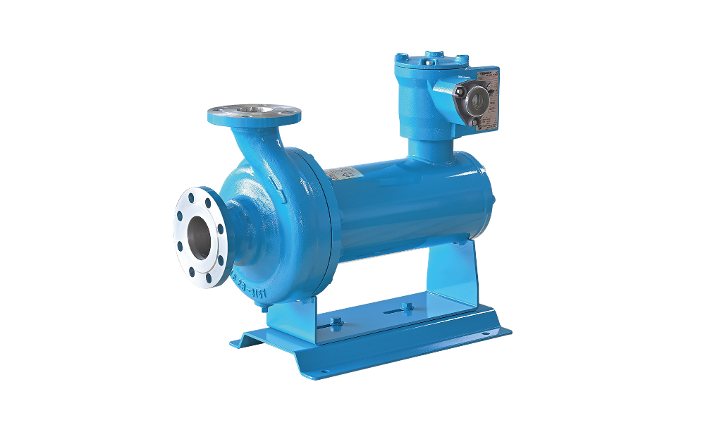

Product Overview
产品简介
用于无泄漏输送易燃、易爆、有毒、强腐蚀、高温或低温介质，是高安全要求场景的重要过程泵。


用于无泄漏输送易燃、易爆、有毒、强腐蚀、高温或低温介质，是高安全要求场景的重要过程泵。
可作为装置中的进料泵、循环泵、热油泵、低温液输送泵及其他关键连续输送设备。
适用于连续输送和循环阶段，尤其是对密封可靠性和介质零泄漏要求较高的工段。
采用电机与泵体一体化、无轴封结构，实现对危险或敏感介质的零泄漏输送，并通过本土化制造与服务体系提高项目配合效率。
无轴封、零泄漏
电机与泵体一体化
本土化制造与服务体系较完善
适用于热油、低温液化气体、易汽化介质和腐蚀性介质
以下为当前产品页可公开展示的参考信息，具体参数、材质和配置请结合项目工况进一步确认。
| 系列覆盖参考 | 22 个系列、2000+ 规格 |
|---|---|
| 能力参考 | 流量 1000 m³/h、扬程 800 m、功率 500 kW |
| 耐温参考 | -120℃ 至 450℃ |
| 备注 | 具体系列和材质需根据介质与工况确认 |